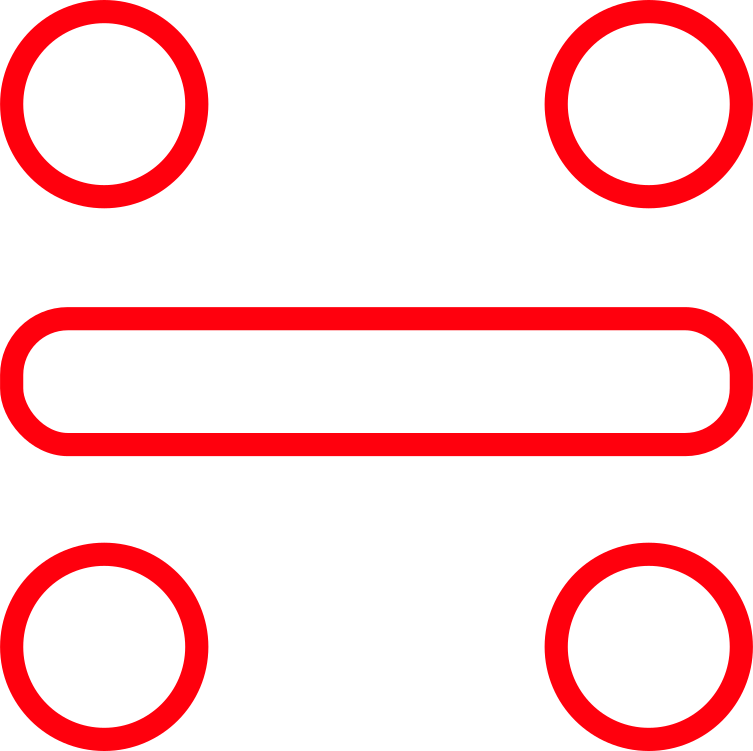

Feb. 9th-11th, 2018 Location TBA
It's amazing what you can make with a killer team and a table.
Join UGA for it's 3rd annual Hackathon! This year is all about going back to the basics. Come find out what a hackathon is all about!
REGISTER NOW

Join UGA for it's 3rd annual Hackathon! This year is all about going back to the basics. Come find out what a hackathon is all about!
REGISTER NOW
Hackathons are all about groups of dedicated people coming together at a workspace to create something awesome. The 36 hour hackaton is free and open to anyone.
It includes mentors, free food, video game competitions, social mixers and more. There's even mixers at the event for anyone that still needs to find some teammates!
Hackathon creations usually revolve around technology. Things like hardware, programs, games, and apps are great choices, but these are only a few examples.
At a hackathon, you can make anything you want. From prjectors created out of trash, to exciting new apps, to wacky inventions, the possibilities are endless.